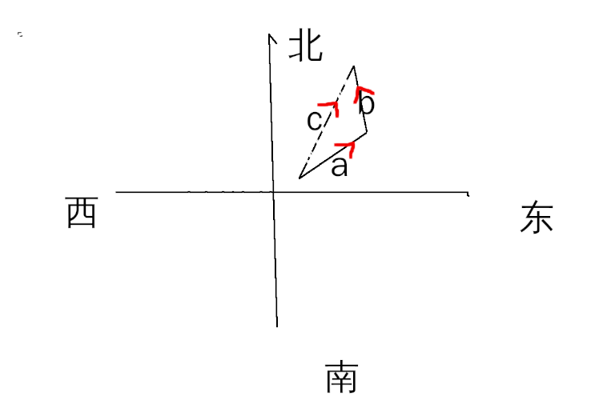

物理简介

文章目录
物理是讲解物体的属性的一门知识，等同于其它知识一样，会因为研究的深入而过时。
基础物理
测量
物理量的多少要用到测量工具，而且要用国际标准的。
矢量
矢量是有方向的量，它的计算用平行四边形方法。
最简单的矢量是位移。
 比如你朝 a 方向走了一段路， 再朝 b 方向走一段路，本质上很 c 走的路是一样的。
力和运动
-
牛顿第一定律：如果没有外力作用在一个物体上，则该物体的速度就不能改变；即，物体不可能加速。
-
牛顿第二定律：作用于物体上的合力等于物体的质量与它的加速度的乘积。 F=Ma
-
牛顿第三定律：相互作用的两个物体之间的作用力和反作用力总是大小相等，方向相反，作用在同一条直线上。
-
万有引力，在地球上就是受到地球的重力。
-
牛顿力学适用于惯性参考系。
在牛顿之前，人们普遍认为是力促使了物体恒速运动，否则物体将会静止。 然而，将冰球扔到溜冰场，它将滑很远。可见这种观念有些不正确，牛顿就对运动提出了他的理解。
参照系
-
惯性参照系: 相对地面做等速直线运动的参考系，在研究地面上物体小范围内的运动时，地球是一个良好的惯性系
-
非惯性系：也称非惯性参考系，是相对地面惯性系做加速运动的物体。在非惯性系中，牛顿第一定律并不成立。
-
平动加速系：相对于惯性系作变速直线运动，但是本身没有转动的物体。例如在平直轨道上加速运动的火车。
-
转动参考系：相对惯性系转动的物体。例如在水平面匀速转动的转盘。
参照系指的是运动的观察人。 比如你我不动，东西在你我的中间，假如它向我走来，如果以我为看来，就是靠近我，如果以你看来就是远离你。这是惯性参照。 又比如你在动，而房子是不动的，那么以你看来，其实就是房子在动。这个是非惯性系。因为这里牛顿第一定律不成立，因为在我们看来，我没没给房子加力，房子却动了。
绝对运动和相对静止：就是说东西动不动，跟另一个人的运动状态有很大的关系，就是两者叠加的效果。
牛顿的第一定律是有问题的，缺少观察者的状态。
-
动能和功
动能 ：跟运动状态有关系的能量(动的能力)。
对于运动速度远低于光速，动能是 $$ \frac{1}{2} mv ^2$$
恒力做功 : W= F*d (力×距离)
势能和能量守恒
流体
光学
热学
电磁学
电
小时候大家都玩过一种游戏吧，就是用手在裤子上摩擦摩擦，然后可以把桌子上的碎纸片吸起来。 这个事情告诉我们，电是某些东西带有的属性，很小的东西，可以摩擦掉，然后电能相互吸引。
可以把电想象成河里的水，河是由 水子 组成的，东西呢则由 电子 组成的。 把河堤摩擦摩擦，水就要流动，把东西 摩擦摩擦，电也要流动。
电流动有什么用呢，这里想到一个 电击棍 ， 还有上面那个 实验
电好像也没啥用